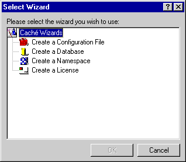
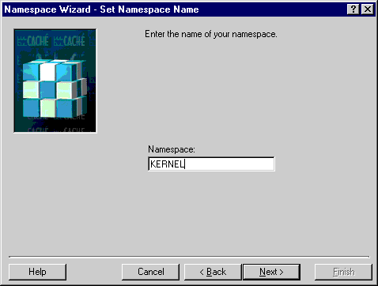
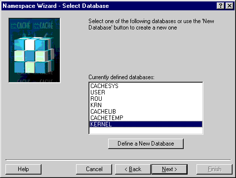
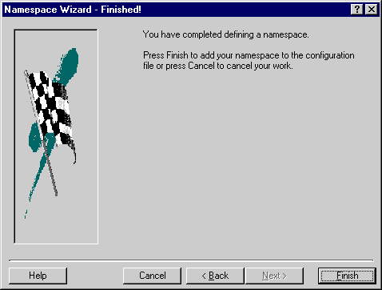

| Cache 3.1 Dataset Namespacing |
Running the Wizard In Cache, a 'Namespace' is the equivalent of a 'UCI', a term that is common in other M implementations. Let's run a Wizard to help us define a Cache Namespace. The following window appears by clicking on the Configuration manager's Wizard button. Select the 'Create a Namespace' wizard. (You can skip this step and go directly to the window below this one by clicking on the 'Add' button when on the Namespace tab in the Configuration Manager.)  In the window below, the namespace is given the same name as the database. This is just a convention to make it easier to find the databases associated with namespaces. While you can use a name different than KERNEL, it will require you to make other adjustments to the VistA Infrastructure settings. Name it KERNEL to make it easy on yourself.  In the following window, we select the database that was created earlier. This step makes an association that Cache uses to understand where its 'world' (namespace) resides on the 'platform' (OS directories).  
|
Search | Home | MUMPS | Fileman | Kernel | C/S, Mailman, Web | Programmer Tools | Applications